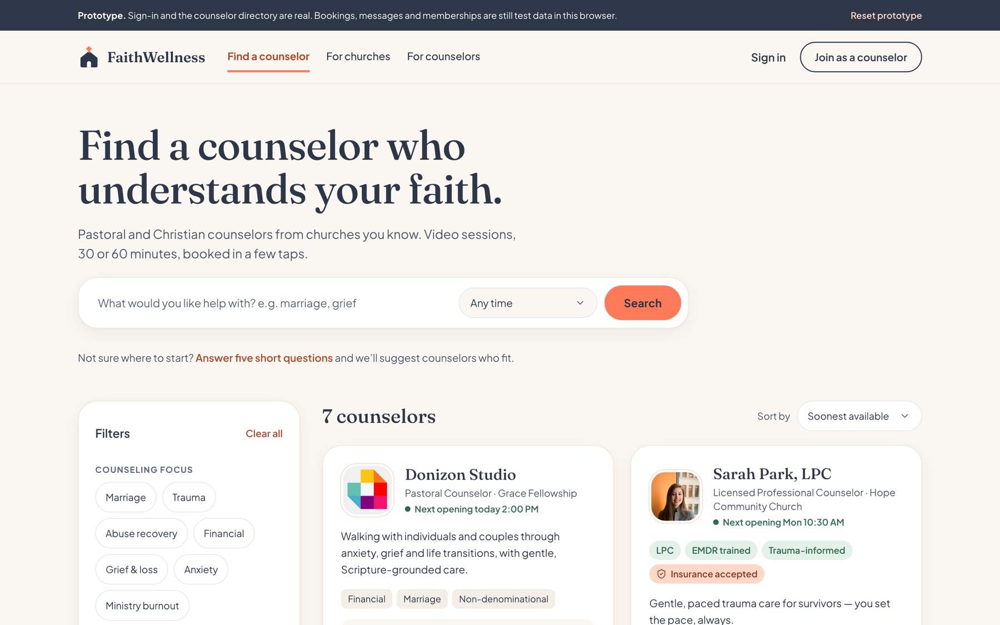
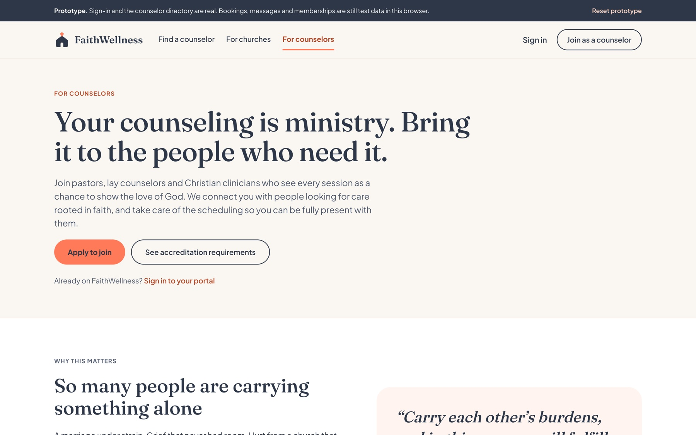
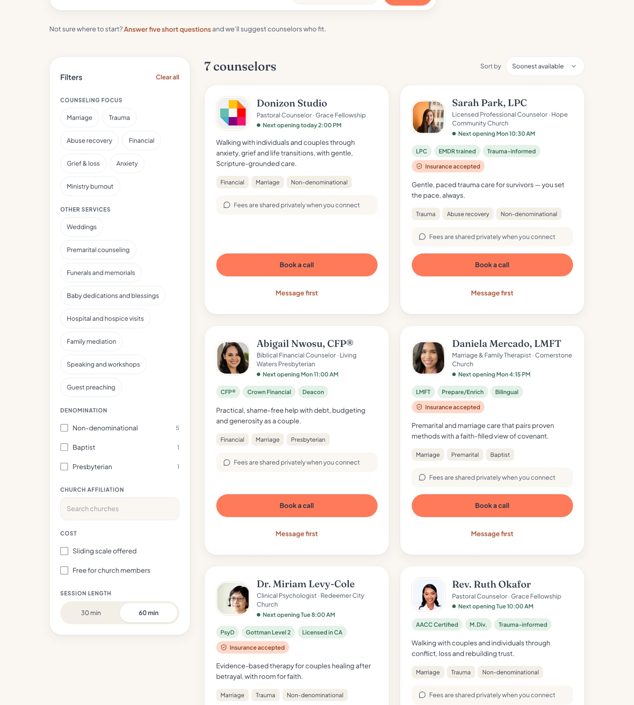
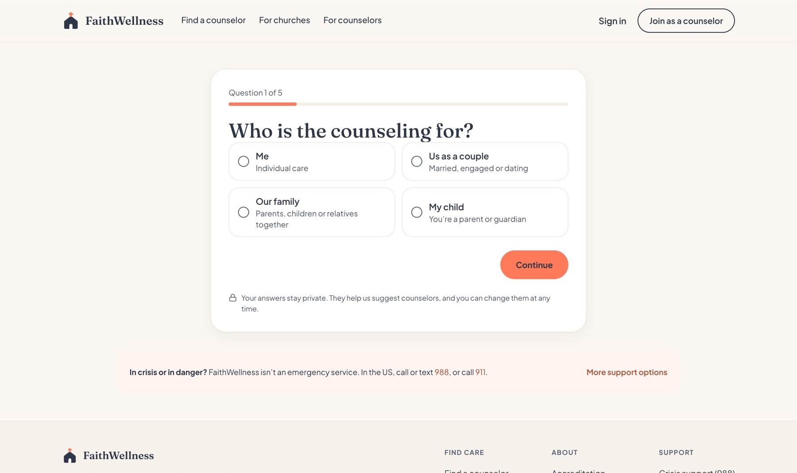
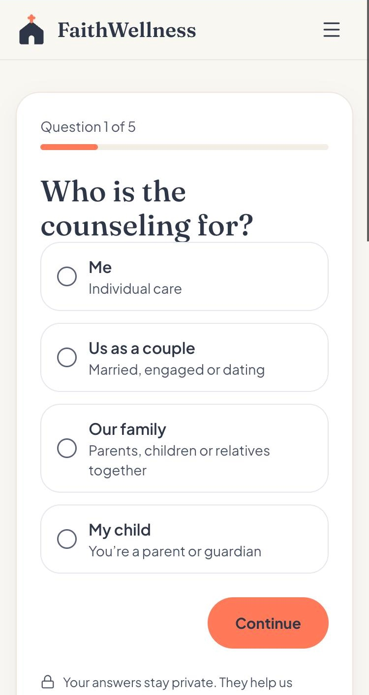
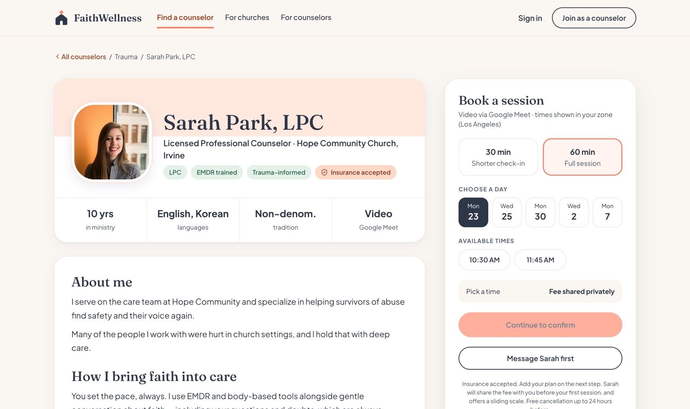
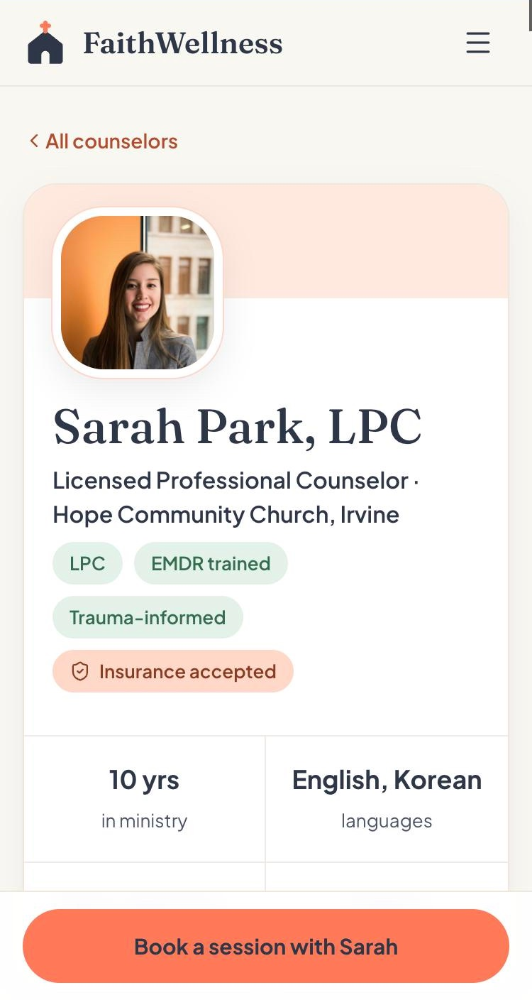
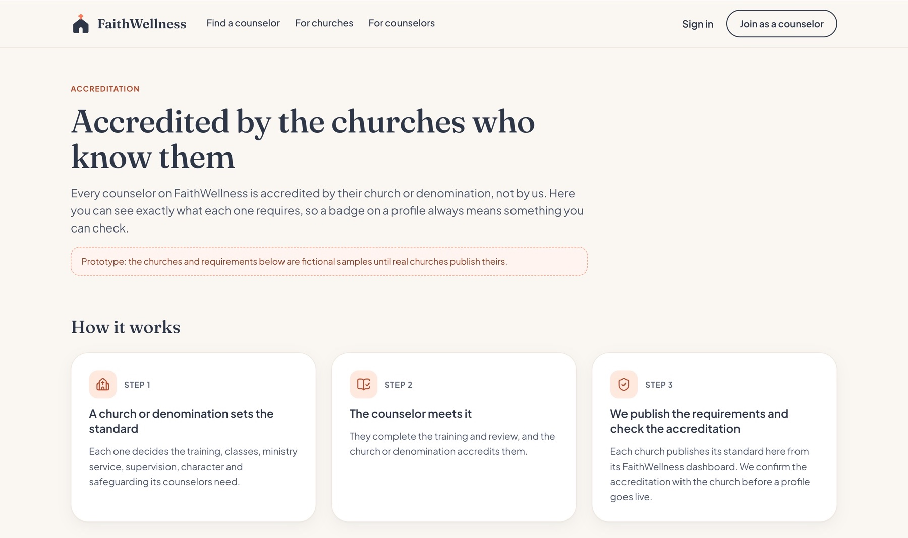
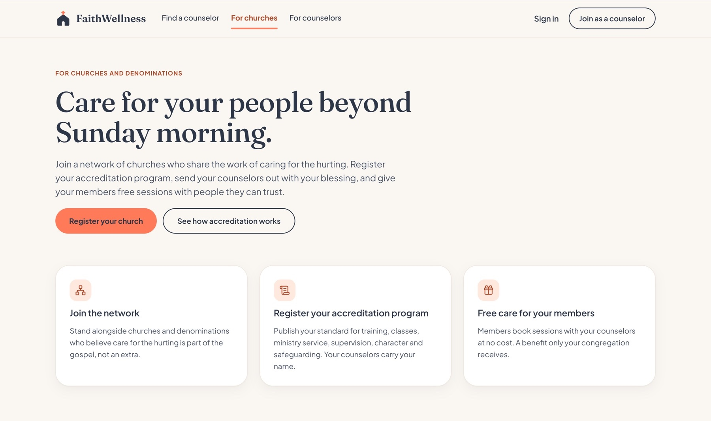
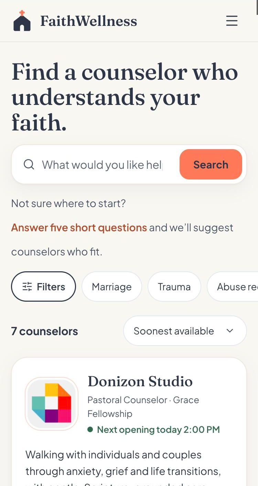

Case study · Product design · Brand · Front end
FaithWellness
A prototype that connects people with pastoral and Christian counselors, each one accredited by a church they can trust.
Section 1
A working prototype, ready to test
I shaped FaithWellness from an idea into a prototype people can actually use: real sign-in and a real counselor directory, with bookings, messages and memberships simulated for testing.
- One marketplace serving three audiences: people seeking care, counselors and churches
- A brand that feels warm and trustworthy, not clinical
- Designed and built end to end, responsive from desktop to phone
- Safety built in: crisis help on every page

Section 2
So many people carry something alone
A marriage under strain. Grief that never had room. Hurt from a church that should have been safe. Many people want help that honours their faith, but don't know where to find it.
Some can't ask their own pastor, some face long waiting lists, and some can't afford it. FaithWellness had to make faith-rooted care easy to find, and easy to trust.

Section 3
A directory built on trust
Every card answers the questions people are afraid to ask: who is this, which church stands behind them, and when can I talk to them?
- Credentials, church and the next opening, at a glance
- Filters for focus, denomination, church, cost and session length
- Pastoral services too: weddings, funerals, hospital visits, mediation
- Fees shared privately when you connect, so cost never shames anyone


Section 4
Not sure where to start?
Browsing a directory is hard when you're hurting. Five short questions do the sorting instead, starting with the simplest: who is the counseling for?
Me, us as a couple, our family or my child. Answers stay private, and you can change them at any time.


Section 5
Profiles that feel personal
A profile reads like meeting someone, not scanning a listing: how they bring faith into care, and the verse they return to most.
- Years in ministry, languages, tradition and how sessions happen
- Book a 30 or 60 minute video session in a few taps
- On phones, the booking button stays within reach

Section 6
Accredited by the churches who know them
The key product decision: FaithWellness doesn't accredit anyone. Churches and denominations do, and every badge links to a standard you can check.
- A church or denomination sets the standard for training, supervision and safeguarding.
- The counselor meets it, and the church accredits them.
- FaithWellness publishes the requirements and confirms the accreditation before a profile goes live.

Section 7
Three audiences, one network
A marketplace only works if every side wants to be there, so each audience got its own front door.
- Churches register their accreditation program and give members free sessions
- Counselors bring their ministry beyond the church walls, with scheduling handled
- People seeking care find someone their own church can vouch for

Section 8
Gentle by design, safe by default
People arrive here on hard days, so the product never asks them to carry more than they have to.
- Crisis help on every page: call or text 988, or call 911
- Fees discussed privately, never on a public card
- Message a counselor first, before committing to a session
- Warm colours, a friendly serif and plain words throughout